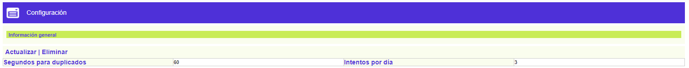
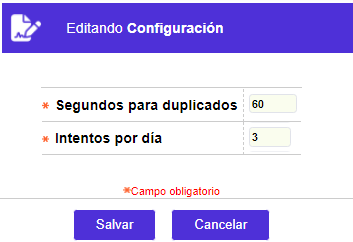

|
Configuraciones |
Mediante esta función se definen los parámetros que configurarán la comunicación, utilizando como protocolo BASE24.
El formulario contiene las opciones Actualizar y Eliminar; y la opción Adicionar se muestra cuando se elimina la configuración actual.

Adicionar: Si el usuario invoca la opción Adicionar se despliega un formulario con los siguientes campos:

|
Segundos para duplicados |
Campo que indica la cantidad máxima de segundos que deben transcurrir entre dos solicitudes de autorización con idénticos datos y valores para considerar transacciones como duplicadas. |
|
Intentos por día |
Este campo contiene el número máximo de intentos de PIN o clave errados por día. |
Actualizar: Si el usuario invoca la opción Actualizar se despliega un nuevo formulario en el cual los únicos campos modificables son: Segundos para duplicados e Intentos por día.
